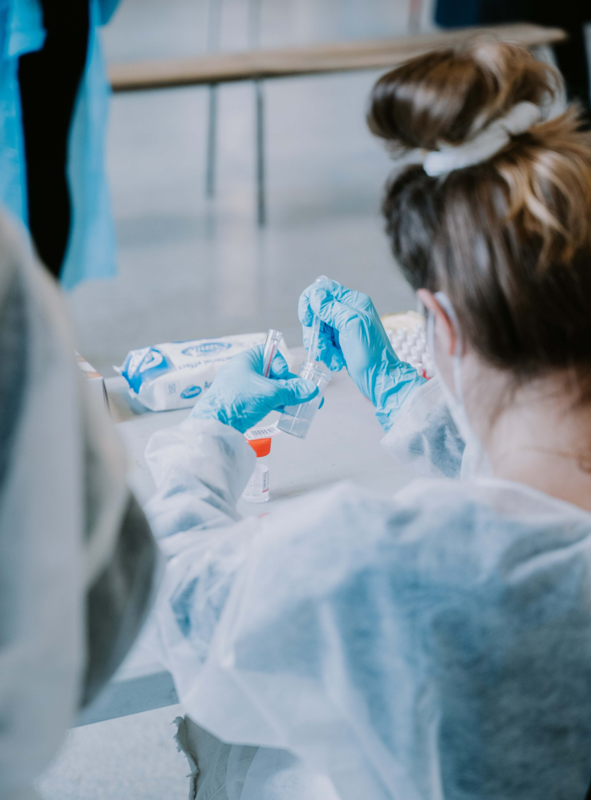

Willkommen beim Quanten-Neuro-Interaktions Kongress!
Tauchen Sie ein in die faszinierende Welt der Künstlichen
Intelligenz und erkunden Sie unser innovatives Projekt, das die
Grenzen der Realität verschwimmen lässt.
Die Quanten-Neuro-Interaktion - die Verbindung von Quantenphysik und Neurowissenschaften - ist unser Thema. Entdecken Sie auf unserem Kongress die aufregenden Möglichkeiten in diesem aufstrebenden Forschungsfeld. Treffen Sie führende Experten, vernetzen Sie sich und erweitern Sie Ihr Wissen.
Ein inspirierender Austausch am 14. und 15. September in Berlin und digital erwartet Sie. Machen Sie sich auf Überraschungen gefasst! #QuantenNeuroKongress
Tausende von Neurologen in Unternehmen vertrauen darauf
Zeitplan
Tauchen Sie in den vielfältigen Zeitplan ein, der spannende
Diskussionen, Panels und interaktive Sessions umfasst. Entdecken
Sie, wann unsere Experten über Quanten-Neuro-Interaktion
diskutieren werden.
FREITAG
SAMSTAG
Prof. Dr. Christof Spies
09:00 - 10:00
Maximilian Schmidt
09:00 - 10:00
Liam Hawthorne, Mia Delaney
10:15 - 12:15
Dr. Hannah Müller
10:15 - 12:15
Lukas Wagner, Ava Harrington
13:00 - 14:00
Sophia Becker, Oliv Wrenwood
13:00 - 14:00
Dr. Ethan Mercer
14:15 - 15:15
Caleb Ashford, Gabriel Sinclair
14:15 - 15:15
Lily Abernathy, Lucas Whitman
15:45 - 17:00
Ema Backwell, Oliver Kingsley
15:45 - 17:00
Bekannte Referenten
und Teilnehmer
Treffen Sie die Köpfe hinter den Diskussionen. Lernen Sie
unsere virtuellen Experten kennen und erfahren Sie mehr über
ihre fiktiven Hintergründe. Obwohl sie Kreationen der KI
sind, werden sie dennoch Ihr Denken anregen und zum
Nachdenken über zukünftige Möglichkeiten anregen.
QNI erforscht die potenzielle Verbindung zwischen
Quantenphänomenen und Gehirnfunktion, mit Auswirkungen auf
Bewusstsein, Medizin, Technologie und Ethik.
Tatsächlich gibt es in der Forschungsgemeinschaft regelmäßig
Konferenzen und Kongresse, die sich auf QNI konzentrieren.
Bei diesen Veranstaltungen kommen führende Experten aus
verschiedenen Disziplinen zusammen, um ihre neuesten
Erkenntnisse, Ideen und Entwicklungen in diesem
aufstrebenden Bereich auszutauschen. Diese Konferenzen
bieten eine Plattform für den interdisziplinären Austausch
und fördern die Zusammenarbeit zwischen Wissenschaftlern,
Technologen und Ethikern, um die vielfältigen Aspekte der
QNI zu erforschen und zu diskutieren. Die Diskussionen und
Erkenntnisse, die auf solchen Konferenzen entstehen, tragen
dazu bei, die QNI-Forschung weiter voranzutreiben und ihr
Potenzial voll auszuschöpfen.
QNI erforscht die potenzielle Verbindung zwischen
quantenphysikalischen Phänomenen und neuronaler Aktivität im
Gehirn.
Die Synergie von Gehirn und Quantenwelt, erforscht durch die
Quanten-Neurowissenschaftliche Untersuchungen (QNI), öffnet
ein faszinierendes Forschungsfeld, das die potenzielle
Verbindung zwischen quantenphysikalischen Phänomenen und
neuronaler Aktivität im Gehirn näher beleuchtet. Diese
interdisziplinäre Forschung könnte nicht nur bahnbrechende
Erkenntnisse über die Funktionsweise des Gehirns und deren
Beziehung zu den Grundlagen der Quantenphysik liefern,
sondern auch neue Perspektiven für die Entwicklung von
medizinischen Therapien, fortschrittlichen Technologien und
ethischen Richtlinien eröffnen. Die Erkenntnisse aus der QNI
könnten somit sowohl unser Verständnis des Bewusstseins als
auch die Art und Weise, wie wir mit den komplexen
Herausforderungen des 21. Jahrhunderts umgehen, maßgeblich
beeinflussen.
Die Quantum Neuro Interaktion erforscht die Möglichkeit,
dass Quanteneffekte im Gehirn eine zentrale Rolle bei der
Entstehung des Bewusstseins spielen könnten.
Dieses aufstrebende Forschungsfeld verbindet die
faszinierende Welt der Quantenphysik mit der komplexen
Funktionsweise unseres Gehirns, um grundlegende Fragen zur
Natur des Bewusstseins zu beantworten. Die Erkenntnisse aus
der QNI könnten nicht nur unser Verständnis des Bewusstseins
vertiefen, sondern auch die Tür zu innovativen medizinischen
Ansätzen, technologischen Entwicklungen und ethischen
Diskussionen weit öffnen. Die Verbindung zwischen
Quantenphänomenen und Bewusstsein verspricht, unsere
Vorstellung von der menschlichen Natur auf eine neue Ebene
zu heben und neue Horizonte für die Forschung zu eröffnen.
QNI könnte zu innovativen Ansätzen in der medizinischen
Forschung für Neurologie und Psychiatrie führen.
QNI hat das Potenzial, die medizinische Forschung in den
Bereichen Neurologie und Psychiatrie zu revolutionieren. Die
Erforschung der Verbindung zwischen Quanteneffekten und
Gehirnfunktion könnte zu maßgeschneiderten Therapieansätzen
für neurologische und psychische Erkrankungen führen,
wodurch die Lebensqualität der Betroffenen erheblich
verbessert werden könnte. Dies verspricht bahnbrechende
Entwicklungen in der Medizin.
QNI könnte einen Weg zu neuartigen Technologien wie
Quantencomputing und Künstlicher Intelligenz ebnen.
Die Verbindung zwischen Quantenphänomenen und der
Funktionsweise des Gehirns verspricht leistungsstärkere
Rechenmaschinen und fortschrittliche intelligente Systeme zu
schaffen, die in verschiedenen Bereichen transformative
Auswirkungen haben könnten.
QNI wirft ethische Fragen auf, während sie auch neue Wege
für das Verständnis des menschlichen Geistes eröffnet.
Diese interdisziplinäre Disziplin eröffnet potenziell
bahnbrechende Einsichten in die Natur des Bewusstseins und
wie unser Gehirn funktioniert. Gleichzeitig erfordert sie
jedoch eine sorgfältige Auseinandersetzung mit Fragen der
Privatsphäre, der ethischen Verantwortung und der möglichen
Auswirkungen auf die Gesellschaft. Die Chancen und
Herausforderungen, die QNI bietet, machen sie zu einem
spannenden, aber auch verantwortungsvollen Forschungsfeld.
Die folgenden Konferenzausschnitte bieten Einblicke in die aufregende Welt der Quanten-Neuro-Interaktion und zeigen, wie sie unser Verständnis der Realität und des menschlichen Geistes auf den Kopf stellen könnte. Machen Sie sich bereit für inspirierende Diskussionen und tiefe Einblicke in die Zukunft der Forschung.
Die Faszination für QNI: Warum es alle reden
QNI im Rampenlicht - Ansichten aus verschiedenen Perspektiven
Stimmen zum Kongress
Schließen Sie sich zehntausenden von Entwicklern an, die mit Xata
arbeiten, um bessere Produkte zu entwickeln.
Max Weber
@CuriousMax
Physikstudent
Faszinierende Diskussionen auf dem
#QNIKongress! Hier treffen
Quantenverschränkung und Gehirnwellen aufeinander - wer
h√§tte gedacht, dass sie so viel gemeinsam haben? üååü§Ø
#Innovation
Dr. Sarah Müller
@QuantumSarah
Neurowissenschaftlerin
Gerade beim
#QuantenNeuroKongress gewesen
und mein Verstand ist förmlich explodiert! Die Verbindung
von Quantenphysik und Neurologie ist wirklich atemberaubend.
ü߆üîÆ
#ZukunftsweisendeWissenschaft
Emily Schneider
@EmilyQuantum
Wissenschaftsjournalistin
Die Teilnahme am Kongress für Quanten-Neuro-Interaktion war
eine unglaubliche Erfahrung. Es ist erstaunlich, die Zukunft
der Wissenschaft direkt vor unseren Augen zu erleben.
#NeuroQuantum
Dr. David Wagner
@QuantumMindset
Quantenphysiker
Die Schnittstelle zwischen Quantenmechanik und neuronalen
Netzwerken war noch nie so aufregend! üåü Ich liebe die
Erkenntnisse und Diskussionen auf dem
#QuantenNeuroKongress #NextGenForschung
Anna Müller
@AnnaNeuroQ
Studentin der Neurowissenschaften
Beim
#QuantenNeuroKongress
beeindruckt von der Möglichkeit, wie Quantenmechanik unser
Verständnis des Gehirns erweitert. Eine aufregende Zeit für
die Wissenschaft! ü߆üî¨
#NeueHorizonte
Dr. Thomas Becker
@QuantumBrainDoc
Neurologe
Erstaunt über die Verbindung von Quantenphänomenen und
Gehirnfunktionen auf dem
#QNIKongress. Eine aufregende
√Ñra der Forschung hat begonnen! üååü߆
#FrontiersOfScience
Lara Schmidt
@Lara_Quantum
Technologie-Enthusiastin
Teilnahme am
#QuantenNeuroKongress hat mich
wirklich zum Nachdenken gebracht. Die Verschmelzung von
Quantenwelt und Gehirnaktivit√§t ist faszinierend! üí°üåü
#ScienceExploration
Dr. Felix Klein
@FelixQMind
Forscher in Quanteninformatik
Die Zukunft ist hier! Am
#QuantenNeuroKongress erstaunt
über die Möglichkeiten, wie Quantenphänomene das Verständnis
unserer Gedanken und Gehirne revolutionieren. üöÄü߆
#QuantumRevolution
Julia Richter
@JuliaMindWave
Neuropsychologin
Der #QNIKongress hat gezeigt,
wie die Kombination von Quantenphysik und
Neurowissenschaften zu aufregenden neuen Erkenntnissen
f√ºhren kann. Spannende Zeiten! üååüî¨
#WissenschaftEntdecken
Dr. Alex Schneider
@NeuroQuantumAlex
Forscher für Neuro-Quantenphänomene
Am
#QuantenNeuroKongress
diskutieren wir das Unmögliche. Quantenphysik und
Neuroneninteraktion - ein bemerkenswerter Schritt in der
Forschung. üå†ü߆
#WissenschaftErforschen
Lisa Wagner
@LisaQuantumMind
Science-Fiction-Autorin
Es ist fast surreal, wie die Realität die Fiktion auf dem
#QuantenNeuroKongress
überholt. Das Potenzial der Quanten-Neuro-Interaktion ist
ein wahres Abenteuer der Wissenschaft! üöÄüìö
#ScienceFictionRealität
Dr. Niklas Müller
@QuantumNeuroNik
Bioinformatiker
Beim #QNIKongress werden
Grenzen zwischen Disziplinen verschwommen. Die Verbindung
von Quantenphysik und Neurologie eröffnet neue Perspektiven.
üååü߆
#InterdisziplinäreForschung
Sophia Weber
@SophiaQInteract
AI-Entwicklerin
Fasziniert von den Möglichkeiten der
Quanten-Neuro-Interaktion auf dem
#QuantenNeuroKongress. KI und
Gehirn - eine Symbiose, die unsere Zukunft gestaltet! üåêü߆
#AIInnovation
Dr. Jonas Klein
@JonasNeuroQuant
Neurowissenschaftler
Am #QNIKongress erkenne ich,
wie Quantenphänomene unser Verständnis des Gehirns
erweitern. Eine faszinierende Reise in die Welt der
Wissenschaft! üååüî¨
#GehirnErforschen
Maria Richter
@MariaQuantumMind
Studentin der Quantenphysik
Der #QuantenNeuroKongress hat
mir die Augen für die aufregenden Verbindungen zwischen
Quantenwelt und Gehirnfunktionen geöffnet. Eine
inspirierende Erfahrung! üåüü߆
#WissenschaftEntdecken
Stand der Forschung
1930
Erste Forschungen zur Quantenmechanik
Die 1930er Jahre waren geprägt von den Pionieren der Quantenmechanik, darunter Größen wie Erwin Schrödinger, Werner Heisenberg und Max Born. In dieser Zeit wurden die grundlegenden Prinzipien der Quantenphysik entwickelt, die die Welt der Physik revolutionierten. Die Quantenmechanik beschäftigt sich mit den ungewöhnlichen Phänomenen der subatomaren Welt, wie Superposition und Verschränkung, die unser klassisches Verständnis der Realität herausforderten und zu einem tiefgreifenden Paradigmenwechsel führten.
1960
Erste Forschungen zur Neurophysiologie
In den 1960er Jahren trat die Neurowissenschaft auf die Bühne der Forschung. Die Erforschung des Gehirns und seiner neuronalen Prozesse gewann an Bedeutung. Wissenschaftler begannen, die komplexen Mechanismen des Gehirns zu entschlüsseln und eröffneten damit neue Horizonte für das Verständnis der kognitiven Funktionen.
1980
Erste Forschungen zur Quanten-Neuro-Interaktion
Die 1980er Jahre markierten den Beginn von Forschungen zur Quanten-Neuro-Interaktion (QNI), einem aufstrebenden Gebiet, das die Verbindung zwischen Quantenmechanik und Neurowissenschaften erforschte. Die Idee, dass Quantenphänomene im Gehirn eine Rolle spielen könnten, löste eine Welle der Neugier und Begeisterung aus. Forscher begannen, die Möglichkeiten zu erkunden, wie Quantenmechanik das Verständnis des Gehirns und seiner Funktionen bereichern könnte.
1990
Erste Experimente zur Untersuchung der Quanten-Neuro-Interaktion
In den 1990er Jahren wurden die ersten Experimente zur Erforschung der QNI durchgeführt. Wissenschaftler suchten nach Anzeichen von Quanteneffekten im Gehirn und entwickelten Methoden, um diese Phänomene zu messen. Diese Experimente eröffneten neue Einblicke in die komplexen Prozesse des Gehirns und legten den Grundstein für weiterführende Forschungen.
2000
Erste Ergebnisse der Quanten-Neuro-Interaktion
Die ersten Ergebnisse der QNI-Forschung wurden in den frühen 2000er Jahren veröffentlicht. Diese Ergebnisse zeigten, dass es tatsächlich Hinweise auf Quantenphänomene im Gehirn gibt, die Einfluss auf kognitive Prozesse haben könnten. Dies eröffnete spannende Perspektiven für die Zukunft der Neurowissenschaften und der Quantenphysik.
2010
Weiterentwicklung der Theorie der Quanten-Neuro-Interaktion
Im Laufe des Jahrzehnts entwickelte sich die Theorie der QNI weiter. Wissenschaftler und Forscher arbeiteten daran, die Mechanismen und Auswirkungen der Quantenmechanik im Gehirn genauer zu verstehen. Dies führte zu einer tieferen Integration von Quantenphysik und Neurowissenschaften.
2016
Erste Patentanmeldung
Schließlich, im Jahr 2016, wurden die ersten Patente im Zusammenhang mit der QNI-Forschung angemeldet. Dies unterstreicht das wachsende Interesse an den praktischen Anwendungen der QNI und den potenziellen Nutzen für die Medizin, die künstliche Intelligenz und andere Bereiche. Dieser Meilenstein markiert den Übergang von der reinen Forschung zur Anwendung in der realen Welt.
Die letzten Jahre haben eine beeindruckende Flut an Entwicklungen und Entdeckungen in den Bereichen Quantenmechanik und Neurowissenschaften gebracht. In der Quantenmechanik wurden bahnbrechende Fortschritte in der Entwicklung von Quantencomputern und Quantenkommunikationstechnologien erzielt. Diese Quantentechnologien haben das Potenzial, unsere herkömmlichen Rechen- und Kommunikationssysteme zu revolutionieren. Forscher haben erfolgreiche Experimente mit Verschränkung und Quantenkohärenz im Kontext von Informationsspeicherung und -übertragung durchgeführt.
In der Neurowissenschaft wurden faszinierende Einblicke in die neuronalen Grundlagen des Bewusstseins und der kognitiven Prozesse gewonnen. Die Bildgebungstechnologie ermöglicht es Forschern, das Gehirn in bisher unerreichter Detailtreue zu erforschen. Der Zusammenhang zwischen neuronaler Aktivität und bewusstem Denken wurde besser verstanden, und es gibt Anzeichen dafür, dass Quantenphänomene im Gehirn eine bedeutende Rolle spielen könnten.
Freuen Sie sich auf diese Themen:
Topic
Quantenmechanik und Gehirn
Die aufregende Idee, dass die Quantenmechanik bei der Informationsverarbeitung im menschlichen Gehirn eine Rolle spielen könnte, hat die Aufmerksamkeit von Forschern und Wissenschaftlern auf der ganzen Welt erregt. Die Theorie der Quantenkohärenz im Gehirn wurde als möglicher Mechanismus für diesen Prozess vorgeschlagen. Sie besagt, dass Quantenphänomene wie Superposition und Verschränkung im Gehirn auftreten könnten, was die Komplexität der neuronalen Verarbeitung erklären würde. Dies ist ein faszinierendes Gebiet, das die Grenzen unseres Verständnisses von Bewusstsein und kognitiver Verarbeitung herausfordert.
Topic
Quantenphysik und Zukunft
Die Quantenmechanik, ein faszinierender Zweig der Physik, hat die Vorstellungskraft von Forschern beflügelt und technologische Entwicklungen vorangetrieben. Ein Schlüsselaspekt der Quantenmechanik ist die Idee, dass Teilchen in mehreren Zuständen gleichzeitig existieren können. Dies hat zu Fortschritten in der Entwicklung von Quantencomputern geführt, die immense Rechenleistung bieten könnten. Darüber hinaus wird die Quantenmechanik in der Quantenkommunikation und -kryptographie genutzt, um die Sicherheit von Informationen zu gewährleisten. Dieses Forschungsgebiet verspricht auf lange Sicht, die Art und Weise zu revolutionieren, wie wir Daten verarbeiten und schützen.
Topic
Die Quanten-Neuro-Interaktion
Die Quanten-Neuro-Interaktion (QNI) ist ein aufregendes, aufstrebendes Forschungsgebiet, das die Verbindung zwischen Quantenphysik und Neurowissenschaften untersucht. Die Grundidee hinter QNI ist, dass die Quantenmechanik eine bislang unerkannte Rolle in den komplexen Prozessen des Gehirns spielen könnte. Diese hypothetische Verbindung könnte ein tiefes Verständnis der Gehirnfunktion und der Entstehung von Bewusstsein bieten. Während QNI noch in den Kinderschuhen steckt, sind Wissenschaftler weltweit begeistert von den Möglichkeiten, die sich daraus ergeben könnten.

Topic
Gehirn und Neuronen
Das Gehirn ist ein erstaunliches Organ, das aus Milliarden von Neuronen besteht. Diese Neuronen kommunizieren miteinander über elektrische und chemische Signale, um unsere Gedanken, Emotionen und Aktionen zu steuern. Die enge Interaktion zwischen diesen Neuronen ist der Schlüssel zur Funktionsweise des Gehirns und zur Entstehung von Bewusstsein. Unser fortschreitendes Verständnis der neuronalen Netzwerke und wie sie arbeiten, trägt wesentlich zur Erforschung der Quanten-Neuro-Interaktion bei.
Topic
Die Zukunft der QNI
Die Quanten-Neuro-Interaktion ist ein Forschungsfeld, das noch viele Rätsel birgt. Wissenschaftler auf der ganzen Welt arbeiten hart daran, die Verbindung zwischen Quantenmechanik und Neurowissenschaften zu verstehen. Während die Idee der Quanten-Neuro-Interaktion noch in den Kinderschuhen steckt, sind die Zukunftsaussichten äußerst vielversprechend. Dieses Feld hat das Potenzial, unser Verständnis des Gehirns und des Bewusstseins auf revolutionäre Weise zu erweitern und könnte eines Tages bahnbrechende Anwendungen in der Medizin, der künstlichen Intelligenz und der Neurologie ermöglichen.
Anmeldung
Melden Sie sich frühzeitig an, um sicherzustellen, dass Sie
Ihren Platz beim Kongress sichern. Die Teilnahme bietet eine
einzigartige Gelegenheit, in die Welt der
Quanten-Neuro-Interaktion einzutauchen und sich mit Experten
und Ethusiasten auszutauschen.